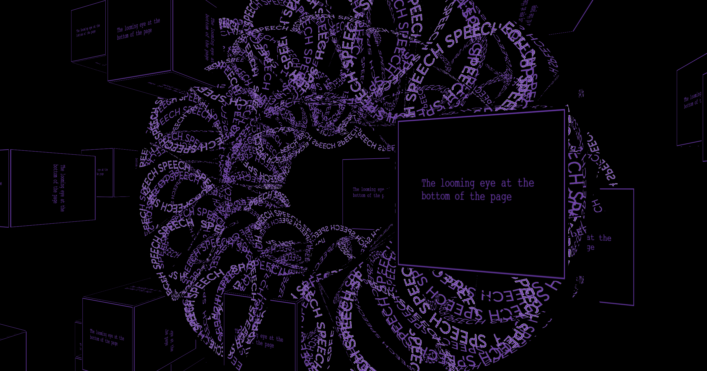

Week 5
Interesting interactivity
Slave to the algorithm

Click here to visit Slave to the algorithm page.
The page is so overwhelming at first that you don’t even realise
that there is small “click me” buttons amid all the colour, when
you click them more and more appear. The colours are so
overwhelming but harmonious at the same time, it felt like the
chaos in a teenage girl’s mind.
Codewords Faye Chen

Click here to visit Faye Chen's Work.
Faye Chen’s work has incredible colour and interesting sound
triggered on click, the words wrapping around each other and the
text bokes emerging from different planes really drew my eye, it
has a confusing zoom with the mouse but it somehow made it more
fun to play around with.